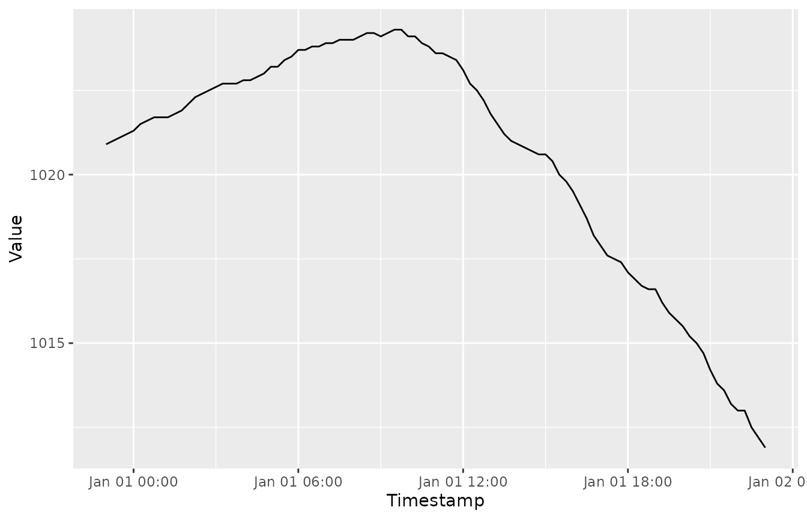
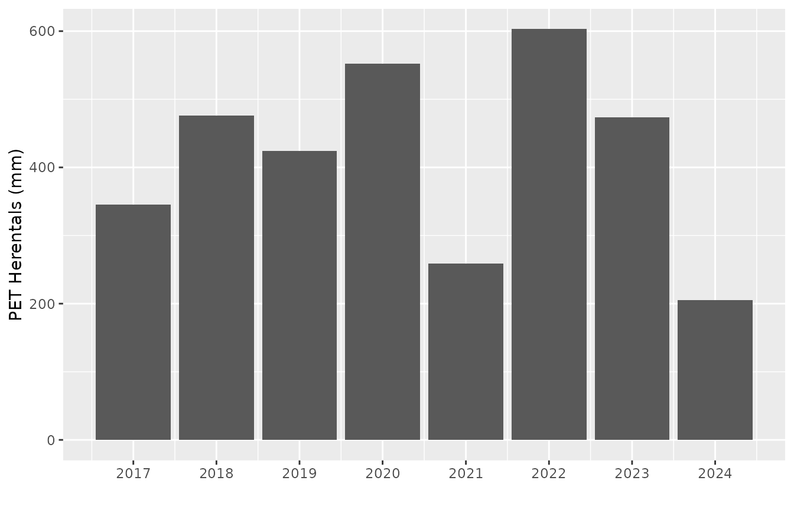
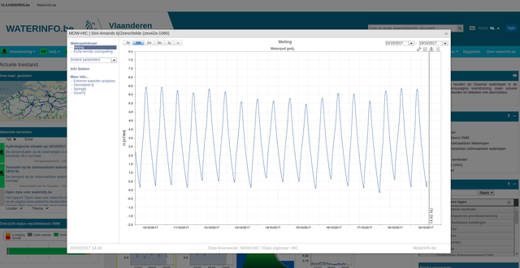
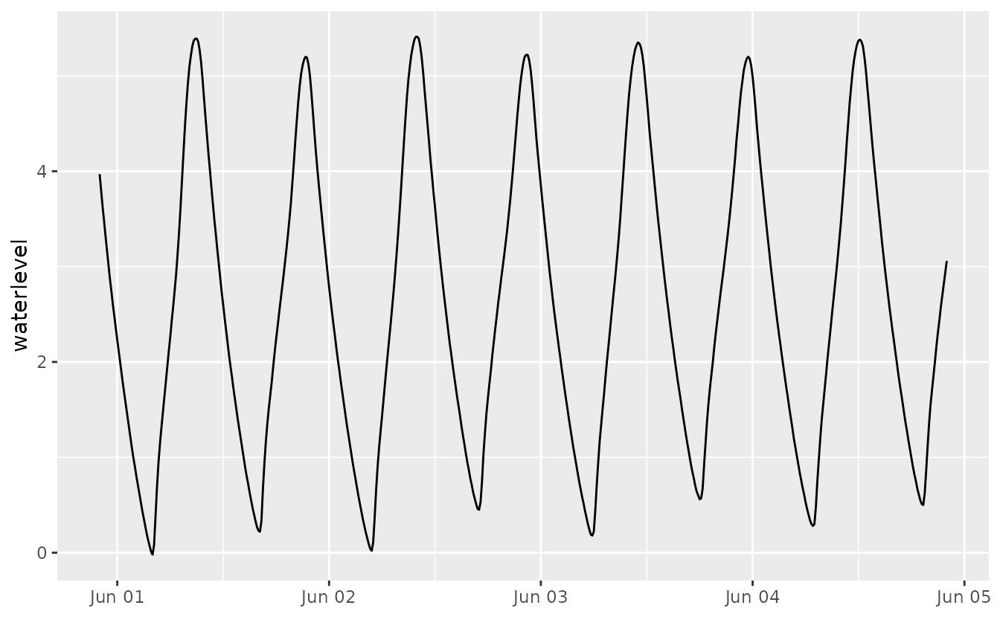
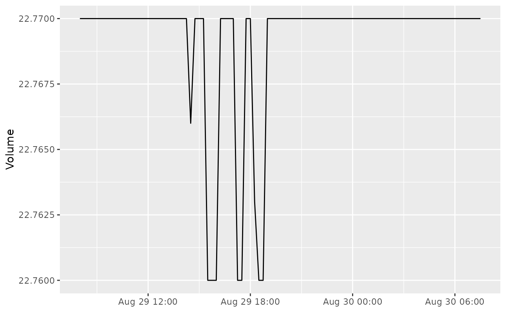
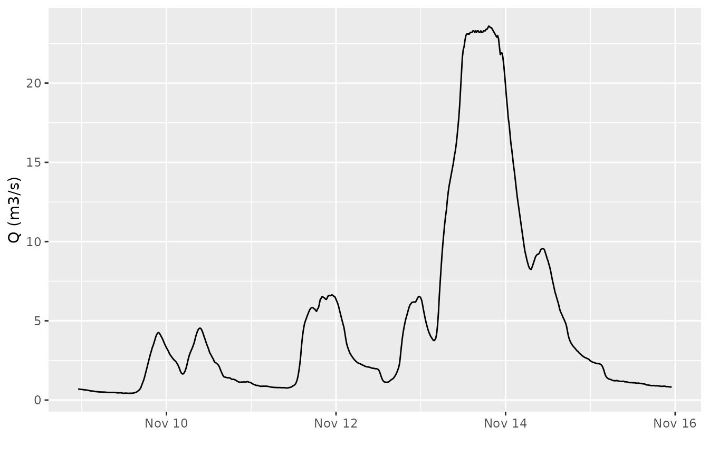

Introduction to downloading time series data from waterinfo.be
Stijn Van Hoey
2021-07-01
Source:vignettes/wateRinfo.Rmd
wateRinfo.RmdIntroduction
The waterinfo.be API uses a system of identifiers, called ts_id to define individual time series. For example, the identifier ts_id = 78073042 corresponds to the time series of air pressure data for the measurement station in Liedekerke, with a 15 min time resolution. Hence, the ts_id identifier defines a variable of interest from a measurement station of interest with a specific frequency (e.g. 15 min, hourly,…). The knowledge of the proper identifier is essential to be able to download the corresponding data.
## Warning in system("timedatectl", intern = TRUE): running command 'timedatectl'
## had status 1
Download with known ts identifier
In case you already know the ts_id identifier that defines your time serie, the package provides the function get_timeseries_tsid() to download a specific period of the time series.
As an example, to download the air pressure time series data of Liedekerke with a 15 min resolution (ts_id = 78073042) for the first of January 2016:
my_data <- get_timeseries_tsid("78073042", from = "2016-01-01", to = "2016-01-02")
knitr::kable(head(my_data), align = "lcc")| Timestamp | Value | Quality Code |
|---|---|---|
| 2015-12-31 23:00:00 | 1020.9 | 130 |
| 2015-12-31 23:15:00 | 1021.0 | 130 |
| 2015-12-31 23:30:00 | 1021.1 | 130 |
| 2015-12-31 23:45:00 | 1021.2 | 130 |
| 2016-01-01 00:00:00 | 1021.3 | 130 |
| 2016-01-01 00:15:00 | 1021.5 | 130 |
For more information on defining the date period of the download, see this vignette. Let’s have a visual check of our data, using the ggplot2 package:

As such, knowing the identifier is the most straightforward way of downloading a time series. In order to find these ts_id identifier, the package supports looking for identifiers based on a supported variable name (limited set of supported variables by VMM) or looking for identifiers by checking all variables for an individual station. These methods are explained in the next sections.
Search identifier based on variable name
For a number of variables, the documentation of the waterinfo.be API provides a direct overview option of all available VMM measurement stations, using the so-called Timeseriesgroup_id. For these variables, the package provides the function get_stations() to download an overview of available measurement stations and the related ts_id identifiers. The latter can be used to download the time series.
get_stations("air_pressure")## ts_id station_latitude station_longitude station_id station_no
## 1 78124042 51.20300 5.439589 12213 ME11_002
## 2 78005042 51.02263 2.970584 12206 ME01_003
## 3 78039042 51.24379 4.266912 12208 ME04_001
## 4 78073042 50.88663 4.094898 12210 ME07_006
## 5 78107042 51.16224 4.845708 12212 ME10_011
## 6 78022042 51.27226 3.728299 12207 ME03_017
## 7 78056042 50.86149 3.411318 12209 ME05_019
## 8 78090042 50.73795 5.141976 12211 ME09_012
## station_name stationparameter_name parametertype_name
## 1 Overpelt_ME Pa Pa
## 2 Zarren_ME Pa Pa
## 3 Melsele_ME Pa Pa
## 4 Liedekerke_ME Pa Pa
## 5 Herentals_ME Pa Pa
## 6 Boekhoute_ME Pa Pa
## 7 Waregem_ME Pa Pa
## 8 Niel-bij-St.-Truiden_ME Pa Pa
## ts_unitsymbol dataprovider
## 1 hPa VMM
## 2 hPa VMM
## 3 hPa VMM
## 4 hPa VMM
## 5 hPa VMM
## 6 hPa VMM
## 7 hPa VMM
## 8 hPa VMMBy default, the expected frequency is the 15 min frequency of the time series. However, for some of the variables, multiple frequencies are supported by the API. The package provides a check on the supported variables and frequencies. An overview of the currently supported variables can be requested with the command supported_variables() (either in Dutch, nl, or in English, en). Actually, more variables are available with the API (see next section), but for each of these variables the get_stations() function is supported (i.e. the Timeseriesgroup_id is documented by VMM).
supported_variables("en") %>%
as.list()## $variable_en
## [1] "discharge" "soil_saturation" "soil_moisture"
## [4] "dew_point_temperature" "ground_temperature" "ground_heat"
## [7] "irradiance" "air_pressure" "air_temperature_175cm"
## [10] "rainfall" "relative_humidity" "evaporation_monteith"
## [13] "evaporation_penman" "water_velocity" "water_level"
## [16] "water_temperature" "wind_direction" "wind_speed"To check which predefined frequencies are provided by the waterinfo.be API for a given variable, the supported_frequencies() function is available:
supported_frequencies(variable_name = "air_pressure")## [1] "15min"Hence, for air pressure data, only the 15 min resolution is supported. Compared to evaporation derived by the Monteith equation:
supported_frequencies(variable_name = "evaporation_monteith")## [1] "15min" "day" "month" "year"Multiple resolutions are available. Using the coarser time resolutions can be helpful when you want to download longer time series while keeping the number of records to download low (if the frequency would be sufficient for your analysis):
stations <- get_stations("evaporation_monteith", frequency = "year")
subset_of_columns <- stations %>% select(ts_id, station_no, station_name,
parametertype_name, ts_unitsymbol)
knitr::kable(subset_of_columns)| ts_id | station_no | station_name | parametertype_name | ts_unitsymbol |
|---|---|---|---|---|
| 94306042 | ME01_003 | Zarren_ME | PET | mm |
| 94526042 | ME10_011 | Herentals_ME | PET | mm |
| 94540042 | ME11_002 | Overpelt_ME | PET | mm |
| 94512042 | ME09_012 | Niel-bij-St.-Truiden_ME | PET | mm |
| 94484042 | ME05_019 | Waregem_ME | PET | mm |
| 94498042 | ME07_006 | Liedekerke_ME | PET | mm |
| 94470042 | ME04_001 | Melsele_ME | PET | mm |
| 94456042 | ME03_017 | Boekhoute_ME | PET | mm |
When interested in the data of Herentals_ME, we can use the corresponding ts_id to download the time series of PET with a yearly frequency and make a plot with ggplot:
pet_yearly <- get_timeseries_tsid("94526042", period = "P10Y")
pet_yearly %>%
na.omit() %>%
ggplot(aes(Timestamp, Value)) +
geom_bar(stat = "identity") +
scale_x_datetime(date_labels = "%Y", date_breaks = "1 year") +
xlab("") + ylab("PET Herentals (mm)")
See this vignette to understand the period = "P10Y" format.
Remark: the get_stations() function only works for those measurement stations belonging to the VMM meetnet (network), related to the so-called datasource = 1. For other networks, i.e. datasource = 4, the enlisting is not supported. Still, a search for data is provided starting from a given station name, as explained in the next section.
Search identifier based on station name
In addition to the option to check the measurement stations that can provide data for a given variable, the package provides the function get_variables() to get an overview of the available variables for a given station, using the station_no. The advantage compared to the ts_id is that these station_no names are provided by the waterinfo.be website itself when exploring the data. When clicking on a measurement station on the map and checking the time series graph, the station_no is provided in the upper left corner in between brackets.

Waterinfo.be example printscreen of time series
So, for the example in the figure, i.e. station_no = zes42a-1066, the available time series are retrieved by using the get_variables() command:
available_variables <- get_variables("zes42a-1066")## Use datasource: 4 for data requests of this station!
available_variables %>% select(ts_id, station_name, ts_name,
parametertype_name)## ts_id station_name ts_name parametertype_name
## 1 55420010 Sint-Amands tij/Zeeschelde HW.tpk W
## 2 55429010 Sint-Amands tij/Zeeschelde Pv.HW W
## 3 55431010 Sint-Amands tij/Zeeschelde Base.Lang W
## 4 55436010 Sint-Amands tij/Zeeschelde Pv.HW.Lang W
## 5 55437010 Sint-Amands tij/Zeeschelde Pv.LW.Lang W
## 6 55442010 Sint-Amands tij/Zeeschelde Gaugings W
## 7 55447010 Sint-Amands tij/Zeeschelde LW.KK W
## 8 94251010 Sint-Amands tij/Zeeschelde AlarmStatus.O W
## 9 89205010 Sint-Amands tij/Zeeschelde KT-det.O W_voorspeld
## 10 96963010 Sint-Amands tij/Zeeschelde KT-HWLW W_voorspeld
## 11 55421010 Sint-Amands tij/Zeeschelde HW.KD_NKD W
## 12 55423010 Sint-Amands tij/Zeeschelde GaugingsGDiff W
## 13 55434010 Sint-Amands tij/Zeeschelde HWLW.Kidigi W
## 14 55446010 Sint-Amands tij/Zeeschelde GaugingsDiff W
## 15 55450010 Sint-Amands tij/Zeeschelde O.HW.KD_NKD W
## 16 113484010 Sint-Amands tij/Zeeschelde Astro.HW.tpk W_voorspeld
## 17 55414010 Sint-Amands tij/Zeeschelde O.Gaugings W
## 18 55441010 Sint-Amands tij/Zeeschelde LW.KD_NKD W
## 19 55449010 Sint-Amands tij/Zeeschelde LW.tpk W
## 20 113485010 Sint-Amands tij/Zeeschelde Astro.LW.tpk W_voorspeld
## 21 55418010 Sint-Amands tij/Zeeschelde HW.KK W
## 22 55430010 Sint-Amands tij/Zeeschelde Pv.LW W
## 23 55448010 Sint-Amands tij/Zeeschelde Pv W
## 24 112686010 Sint-Amands tij/Zeeschelde Astro.10 W_voorspeld
## 25 55422010 Sint-Amands tij/Zeeschelde HW.typ W
## 26 55428010 Sint-Amands tij/Zeeschelde O.TerrainCorr W
## 27 55433010 Sint-Amands tij/Zeeschelde Model W
## 28 55440010 Sint-Amands tij/Zeeschelde HW.Hist W
## 29 55445010 Sint-Amands tij/Zeeschelde LW.typ W
## 30 96962010 Sint-Amands tij/Zeeschelde KT-LW W_voorspeld
## 31 55415010 Sint-Amands tij/Zeeschelde RC W
## 32 55424010 Sint-Amands tij/Zeeschelde Pv.05 W
## 33 55443010 Sint-Amands tij/Zeeschelde LW.rco W
## 34 58546010 Sint-Amands tij/Zeeschelde LW.hulp W
## 35 88623010 Sint-Amands tij/Zeeschelde Astro.HWLW W_voorspeld
## 36 113486010 Sint-Amands tij/Zeeschelde Astro.Pv.HW W_voorspeld
## 37 55425010 Sint-Amands tij/Zeeschelde Pv.HWLW W
## 38 55427010 Sint-Amands tij/Zeeschelde LW.Hist W
## 39 55432010 Sint-Amands tij/Zeeschelde O.LW.KD_NKD W
## 40 55435010 Sint-Amands tij/Zeeschelde Pv.Lang W
## 41 55439010 Sint-Amands tij/Zeeschelde O.HWLW.Kidigi W
## 42 88620010 Sint-Amands tij/Zeeschelde Astro.01 W_voorspeld
## 43 99870010 Sint-Amands tij/Zeeschelde KT-AlarmStatus-Max.O W_voorspeld
## 44 112685010 Sint-Amands tij/Zeeschelde Astro.05 W_voorspeld
## 45 113487010 Sint-Amands tij/Zeeschelde Astro.Pv.LW W_voorspeld
## 46 55416010 Sint-Amands tij/Zeeschelde O.01b W
## 47 55417010 Sint-Amands tij/Zeeschelde Base W
## 48 55419010 Sint-Amands tij/Zeeschelde Pv.10 W
## 49 55426010 Sint-Amands tij/Zeeschelde Kidigi W
## 50 55438010 Sint-Amands tij/Zeeschelde HW.t-h.wdw W
## 51 55444010 Sint-Amands tij/Zeeschelde LW.t-h.wdw W
## 52 84309010 Sint-Amands tij/Zeeschelde KT-Percentile.O W_voorspeld
## 53 96864010 Sint-Amands tij/Zeeschelde KT-Last W_voorspeld
## 54 96961010 Sint-Amands tij/Zeeschelde KT-HW W_voorspeld
## 55 113488010 Sint-Amands tij/Zeeschelde Astro.Pv.HWLW W_voorspeldThe available number of variables depends on the measurement station. The representation is not standardized and also depends on the type of meetnet. Nevertheless, one can derive the required ts_id from the list when interpreting the field names. Remark that the datasource can be 4 instead of 1 for specific meetnetten (networks). The datasource to use is printed when asking the variables for a station.
In order to download the 10 min time series water level data for the station in Sint-Amands tij/Zeeschelde, the ts_id = 55419010 can be used in the get_timeseries_tsid() function, taking into account the datasource = 4 (default is 1):
tide_stamands <- get_timeseries_tsid("55419010",
from = "2017-06-01", to = "2017-06-05",
datasource = 4)
ggplot(tide_stamands, aes(Timestamp, Value)) +
geom_line() + xlab("") + ylab("waterlevel")
For some measurement stations, the number of variables can be high (lots of precalculated derivative values) and extracting the required time series identifier is not always straightforward. For example, the dat Etikhove/Schuif/Nederaalbeek (K06_OM225), provides the following number of variables:
available_variables <- get_variables("K06_OM225")## Use datasource: 1 for data requests of this station!
nrow(available_variables)## [1] 113As the measured variables at a small time resolution are of most interest, filtering on P.15 (or P.1, P.60,…) will help to identify measured time series, for those stations belonging to the meetnet of VMM (datasource = 1):
available_variables <- get_variables("K06_OM225")## Use datasource: 1 for data requests of this station!
available_variables %>%
filter(ts_name == "P.15")## station_name station_no ts_id ts_name parametertype_name
## 1 Etikhove/Schuif/Nederaalbeek K06_OM225 29156042 P.15 H
## 2 Etikhove/Schuif/Nederaalbeek K06_OM225 31882042 P.15 Hk
## 3 Etikhove/Schuif/Nederaalbeek K06_OM225 84094042 P.15 Volume Wachtbekken
## 4 Etikhove/Schuif/Nederaalbeek K06_OM225 22322042 P.15 H
## 5 Etikhove/Schuif/Nederaalbeek K06_OM225 22302042 P.15 H
## stationparameter_name
## 1 Hafw 100m afwaarts
## 2 Hschuif
## 3 Volume_wachtbekken
## 4 Hopw
## 5 HafwLoading and visualizing the last day (period P1D) of available data for the water level 100m downstream (Hafw 100m afwaarts):
afw_etikhove <- get_timeseries_tsid("29156042",
period = "P1D",
datasource = 1) # 1 is default
ggplot(afw_etikhove, aes(Timestamp, Value)) +
geom_line() + xlab("") + ylab("Volume")
We can do similar filtering to check for time series on other stations, for example the Molenbeek in Etikhove:
available_variables <- get_variables("LS06_347")## Use datasource: 1 for data requests of this station!
available_variables %>%
filter(ts_name == "P.15")## station_name station_no ts_id ts_name parametertype_name
## 1 Etikhove/Molenbeek LS06_347 27648042 P.15 T
## 2 Etikhove/Molenbeek LS06_347 60850042 P.15 Sed.conc
## 3 Etikhove/Molenbeek LS06_347 96428042 P.15 Sed.vracht
## 4 Etikhove/Molenbeek LS06_347 63483042 P.15 H
## 5 Etikhove/Molenbeek LS06_347 66411042 P.15 Sed.Q
## 6 Etikhove/Molenbeek LS06_347 38635042 P.15 v
## 7 Etikhove/Molenbeek LS06_347 70346042 P.15 Q
## stationparameter_name
## 1 T
## 2 Sed.conc
## 3 Sed.vracht
## 4 H
## 5 Sed.Q
## 6 v
## 7 QAnd use the ts_id code representing discharge to create a plot of the discharge during a storm in 2010:
etikhove <- get_timeseries_tsid("70346042",
from = "2010-11-09", to = "2010-11-16")
ggplot(etikhove, aes(Timestamp, Value)) +
geom_line() + xlab("") + ylab("Q (m3/s)")
Check the URL used to request the data
As each of these data requests is actually a call to the waterinfo.be API, the call can be tested in a browser as well. To retrieve the URL used to request certain data (using get_variables(), get_stations() or get_timeseries_tsid()), check the comment() attribute of the returned data.frame, for example:
air_stations <- get_stations("air_pressure")
comment(air_stations)## [1] "https://download.waterinfo.be/tsmdownload/KiWIS/KiWIS?type=queryServices&service=kisters&request=getTimeseriesValueLayer&datasource=1×eriesgroup_id=192918&format=json&metadata=TRUE&md_returnfields=custom_attributes%2Cstation_id%2Cstation_no%2Cstation_name%2Cstationparameter_name%2Cts_unitsymbol%2Cparametertype_name%2Cts_id%2Cca_sta&ca_sta_returnfields=dataprovider"or
etikhove <- get_timeseries_tsid("70346042",
from = "2010-11-09", to = "2010-11-16")
comment(etikhove)## [1] "https://download.waterinfo.be/tsmdownload/KiWIS/KiWIS?type=queryServices&service=kisters&request=getTimeseriesvalues&ts_id=70346042&format=json&datasource=1&returnfields=Timestamp%2CValue%2CQuality%20Code&from=2010-11-09%2000%3A00%3A00&to=2010-11-16%2000%3A00%3A00"